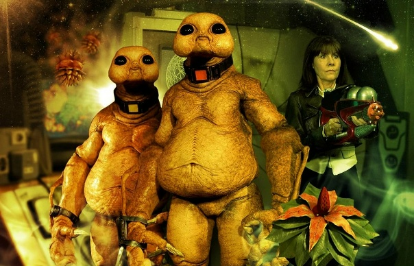

Эра Десятого Доктора
<<< НАЗАД ||| 11-12. Дар ||| ДАЛЬШЕ >>>
или
ДАЛЬШЕ >>> к сериалу "Доктор Кто"
MVO ВГТРК, или Original [ENG]
Субтитры: Русские и Английские

The Gift
Дата выхода: 19-20 ноября 2009
Формат: 2 эпизода по 30 мин.
| Варианты озвучек: | * Разные: смотрите по инструкции |
|---|---|
| Скачивание и просмотр: |
С планеты Сливинов, Раксакорикофаллапаториус, на Землю прибывает другая семья - Блаверины. Они утверждают, что хотят помочь человечеству. В качестве дара они преподносят Саре Джейн растение раквид, которое может остановить проблему голода по всей планете. Раквид, однако, быстро распространяется по всему Лондону и заражает людей, включая Люка. Пока Клайд и Рани с К9 оказываются заперты в школе, Сара Джейн должна спасти не только планету, но и своего сына.

